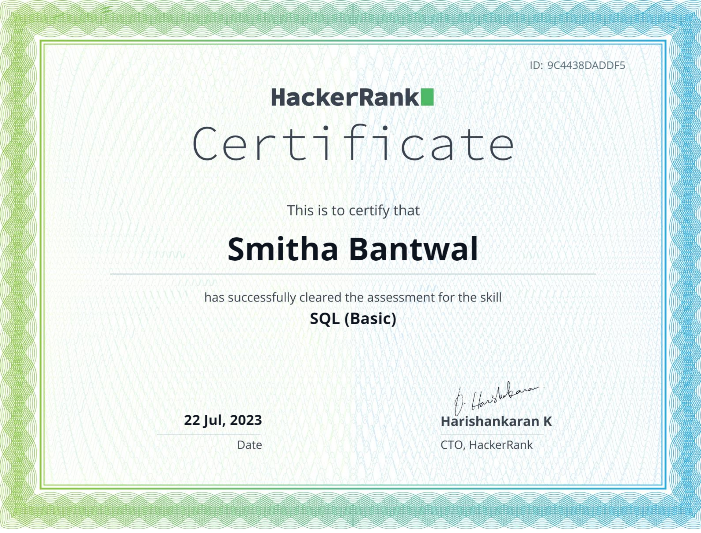

The Cisco Data Analytics Essentials certificate validates fundamental skills in data analytics using Cisco technologies, encompassing data processing and network analytics, enhancing one's proficiency in leveraging data for insights. For detailed information, consult Cisco's official certification resources.

The Google Cloud Architect: Cloud Basics certificate provides foundational knowledge of cloud computing principles and core services on Google Cloud Platform (GCP).
TThe Agile Scrum Master Certification training provides comprehensive knowledge and practical skills for leading Agile projects and Scrum teams, fostering adaptability and efficient project delivery. Earning this certification demonstrates proficiency in Agile methodologies and effective Scrum Master roles.
LinkedIn Learning's Data Analysis certificate is designed to validate proficiency in data analysis skills. The program likely covers key concepts such as data cleaning, visualization, statistical analysis, and using tools like Excel, Python, or R. Completing this certificate indicates a practical understanding of data-driven decision-making and enhances one's professional profile for roles involving data analysis and interpretation.

HackerRank's Python (Basic) certificate confirms proficiency in foundational Python skills, covering syntax, data types, and basic structures. Aspiring candidates prepare by solving Python challenges on HackerRank, demonstrating practical coding expertise and understanding of essential programming concepts.

HackerRank's SQL (Basic) certificate evaluates essential SQL skills, encompassing querying, joins, and data manipulation. Candidates prepare by practicing on HackerRank to master fundamental concepts, ensuring proficiency in tasks like aggregating data and utilizing subqueries.

HackerRank Java Basic Certificate signifies adeptness in core Java skills, validating problem-solving abilities on the platform. It attests to a foundational understanding of Java programming through successful completion of relevant challenges.